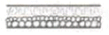
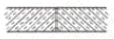
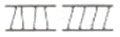
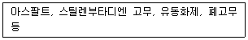
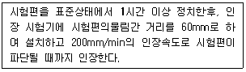
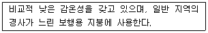
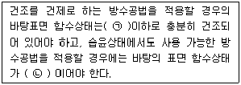
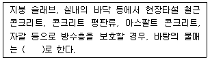
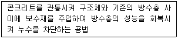
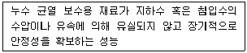

방수산업기사 (2016-08-21 기출문제)
1과목: 방수일반
1. 투시도법에 사용되는 기호의 의미가 옳지 않은 것은?
- V.P: 소정
- S.P: 정점
- E.P: 화면
- G.P: 기면
(정답률: 알수없음)

2. 철근콘크리트공사에서 콘크리트 타설시 거푸집의 측압에 관한 설명으로 옳지 않은 것은?
- 콘크리트의 온도가 높을수록 크다.
- 거푸집의 수평단면이 클수록 크다.
- 콘크리트의 슬럼프값이 클수록 크다.
- 콘크리트의 타설속도가 빠를수록 크다.
(정답률: 알수없음)
3. 곡면판이 지니는 역학적 특성을 응용한 구조로서 외력은 주로 판의 면내력으로 전달되기 때문에 경량이고 내력이 큰 구조물을 구성할 수 있는 것은?
- 셀구조
- 절판구조
- 아치구조
- 현수구조
(정답률: 알수없음)
4. 안전·보건표지의 색체와 용도의 연결이 옳지 않은 것은?
- 녹색 - 안내
- 노란색 - 금지
- 빨간색 - 경고
- 파란색 – 지시
(정답률: 알수없음)
5. 콘크리트가 공기 중의 탄산가스에 의해 수산화 칼슘이 탄산칼슘으로 변화하여 알칼리성을 잃는 현상은?
- 중성화
- 크리프
- 액상화
- 알칼리골재반응
(정답률: 알수없음)
6. 금속의 부식과 관련하여 다음 중 이온화 경향이 가장 큰 금속은?
- Al
- Fe
- Sn
- Cu
(정답률: 80%)
7. 다음 중 건축도면에서 1점 쇄선으로 표현되는 것은?
- 외형선
- 인출선
- 중심선
- 치수선
(정답률: 100%)
8. 점토벽돌벽의 백화를 방지하기 위한 방법으로 옳지 않은 것은?
- 파라핀 도료를 사용한다.
- 벽돌면 상부에 빗물막이를 설치한다.
- 줄눈에 빗물이 스며들지 않도록 방수제를 혼입한다.
- 양질의 모르타르와 15% 이상 흡수율을 가진 벽돌을 사용한다.
(정답률: 알수없음)
9. 소음·진동 관리법령에 따른 소음발생건설기계의 종류에 속하지 않는 것은?
- 천공기
- 항타 및 항발기
- 콘크리트 절단기
- 콘크리트 믹서 트럭
(정답률: 알수없음)
10. 지반위에 있는 콘크리트 바닥판이 수축에 의하여 표면에 균열이 생기는 것을 방지하기 위하여 설치하는 것은?
- 시공줄눈
- 조절줄눈
- 치장줄눈
- 콜드조인트
(정답률: 알수없음)
11. 하인리히(W. H. Heinrich)의 도미노 이론 5단계에 속하지 않는 것은?
- 사고
- 교육부족
- 사회적 환경과 유전적인 요소
- 불안전한 행동과 불안전한 상태
(정답률: 알수없음)
12. 다음중 건물의 부동침하 방지 대책과 가장 거리가 먼 것은?
- 건물을 경량화한다.
- 건물의 강성을 높인다.
- 건물의 평면의 길이를 길게 한다.
- 인접건물과의 거리를 멀게 한다.
(정답률: 알수없음)
13. 금속 커튼월의 성능 시험중 시험소 실물 모형시험(mock up test)의 시험종목에 속하지 않는 것은? (단, 건축공사표준시방서 기준)
- 기밀시험
- 구조시험
- 정압수밀시험
- 인장강도시험
(정답률: 알수없음)
14. 목재의 유성 방주재로 방부성이 우수하나 흑갈색으로 외관이 좋지 않아 눈에 보이지 않는 토대, 기둥, 도리 등에 사용되는 것은?
- 크레오소트유
- 펜타클로로페놀
- 황산동 1% 용액
- 불화소다 2% 용액
(정답률: 알수없음)
15. 다음의 단면용 재료 표시 기호 중 석재를 나타내는 것은?



(정답률: 알수없음)
16. 다음 중 산업재해발생의 기본원인 4M에 속하지 않는 것은?
- Man
- Material
- Machine
- Management
(정답률: 알수없음)
17. 말비계의 높이가 2m를 초과하는 경우, 작업발판의 폭은 최소 얼마 이상으로 하여야 하는가?
- 30cm
- 40cm
- 50cm
- 60cm
(정답률: 알수없음)
18. 건물의 하부 전체 또는 지하실 전체를 하나의 기초판으로 구성한 기초는?
- 독립기초
- 복합기초
- 연속기초
- 온통기초
(정답률: 알수없음)
19. 벽돌조 벽 하부에 바닥의 습기가 상부로 흐르는 것을 방지하기 위하여 설치하는 것은?
- 방수턱
- 방습층
- 펀칭메탈
- 닫힌줄눈
(정답률: 알수없음)
20. 실제길이 3m는 축척 1/30도면에서 얼마로 나타나는가?
- 1cm
- 3cm
- 10cm
- 30cm
(정답률: 알수없음)
2과목: 방수재료
21. 수평부용 건설용 도막방수재의 품질시험 항목에 속하지 않는 것은?
- 인장성능
- 부착성능
- 내피로 성능
- 흘러내림 저항 성능
(정답률: 알수없음)
22. 합성고분자 방수시트 중 균질시트의 품질시험 항목에 속하지 않는 것은?
- 인장성능
- 인열성능
- 압축성능
- 온도의존성
(정답률: 알수없음)
23. 폴리우레아수지 도막 방수재의 인장 성능에서 파단시 신장률의 품질기준은?
- 100% 이상
- 200% 이상
- 300% 이상
- 400% 이상
(정답률: 알수없음)
24. 주원료가 다음과 같은 자착형 방수시트의 종류는?

- 부틸고무계
- 천연고무계
- 고무 아스팔트계
- 블론 아스팔트계
(정답률: 알수없음)
25. 건축물의 지하 구조물 방수용으로 사용하는 수 팽창성 벤토나이트 방수시트의 종류중 일반형을 나타내는 기호는?
- GB
- HB
- NB
- RB
(정답률: 알수없음)
26. 도막계 멤브레인 방수층에 적용되는 성능 시험에 속하지 않는 것은?
- 패임 저항성 시험
- 처짐 저항성 시험
- 풍압 저항성 시험
- 충격 저항성 시험
(정답률: 알수없음)
27. 상온상태에서 영구히 점성과 유연성을 유지하며 가벼운 압력(자중)에 의해서도 피착면에 쉽게 밀착되는 특성을 가진 겔타입의 도막형 방수제는?
- 우레탄 포장재
- 폴리머 분산재
- 점착유연형 도막재
- 비고(경)화성 도막재
(정답률: 알수없음)
28. 합성고분자계 방수 시트(KS F 4911)의 종류에 속하지 않는 것은?
- 가황고무계
- 비가황고무계
- 아크릴수지계
- 염화비닐수지계
(정답률: 알수없음)
29. 시험방법을 다음과 같은 자착식 고무화 아스팔트 방수시트의 품질 시험 항목은?

- 인열성능
- 부착성능
- 온도 의존 성능
- 굴곡 저항 성능
(정답률: 알수없음)
30. 다음의 용도에 알맞은 방수 공사용 아스팔트의 종류는?

- 1종
- 2종
- 3종
- 4종
(정답률: 알수없음)
31. 시멘트 액체형 방수제의 응결시간에 대한 성능 기준으로 옳은 것은?
- 초결이 30분 이상, 종결은 10시간 이내에 일어날 것
- 초결이 30분 이상, 종결은 15시간 이내에 일어날 것
- 초결이 1시간 이상, 종결은 10시간 이내에 일어날 것
- 초결이 1시간 이상, 종결은 15시간 이내에 일어날 것
(정답률: 77%)
32. 옥상 녹화 방수공법 적용 시 식물의 뿌리로부터 방수층을 보호하기 위하여 요구되는 성능은?
- 수밀성
- 방근성
- 내약품성
- 내하중성
(정답률: 알수없음)
33. 규산질계 분말형 도포 방수재의 품질시험 항목에 속하지 않는 것은?
- 부착 강도
- 압축 강도
- 온도 의존성
- 내진갈림성
(정답률: 알수없음)
34. 개량 아스팔트 방수시트를 1류와 2류로 구분하는 기준이 되는 것은?
- 용도
- 겉모양
- 온도 특성
- 재료 구성
(정답률: 90%)
35. 아스팔트 펠트 제품의 종류에 속하지 않는 것은?
- 340품
- 440품
- 540품
- 640품
(정답률: 알수없음)
36. 건축용 실링재를 용도에 따라 구분할 경우 글레이징에 사용하는 실령제는?
- E형
- F형
- G형
- H형
(정답률: 알수없음)
37. 시멘트 혼입 폴리머 방수재의 성능 기준으로 옳지 않은 것은?
- 흡수량: 2.0g 이하
- 인장 강도: 0.5N/mm2 이상
- 부착강도(표준): 0.8N/mm2 이상
- 내투수성: 0.3N/mm2 수압에서 투수되지 않을 것
(정답률: 알수없음)
38. 건축공사표준시방서에서 다음과 같이 정의되는 용어는?
- 방수용액
- 보호 완충재
- 방수 모르타르
- 방수 시멘트 페이스트
(정답률: 알수없음)
39. 시멘트 액체 방수공사를 위한 보조재료 중 한랭시의 시공 시, 방수층의 동해를 방지할 목적으로 사용하는 것은?
- 지수제
- 보수제
- 방동제
- 경화촉진제
(정답률: 알수없음)
40. 지붕방수의 요구성능 중 바람에 의해 부압이 발생하여 방수층이 떠오르는 것에 대한 저항성능은?
- 통기성
- 내풍압성
- 내피로성
- 내정수압성
(정답률: 알수없음)
3과목: 방수시공
41. 지하실 방수공법 중 안방수에 관한 설명으로 옳지 않은 것은?
- 보호누름이 필요없다.
- 수압이 작고 얕은 지하실에 적용된다.
- 바깥방수에 비해 하자보수가 용이하다.
- 바깥방수에 비해 방수층 시공이 용이하다.
(정답률: 알수없음)
42. 우레탄 고무계, 우레탄-우레아 고무계 및 우레아 수지계 도막방수재의 조합, 비빔 및 점도조절에 관한 설명으로 옳지 않은 것은?
- 2액형 방수재의 주(기)제와 경화제의 혼합은 전동 혼합기를 사용하되 회전이 빠른 것을 사용한다.
- 방수재의 점도를 조절할 필요가 있을 경우에는 방수재 제조자의 지정 범위에 따라 희석제 등을 사용할 수 있다.
- 우레탄-우레아 고무계나 우레아 수지계 도막 방수재의 경우, 색상조정을 위해 토너(안료)를 현장에서 투입할 수 있다.
- 저온 시공 시, 우레탄-우레아 고무계 도막 방수재의 온도를 올릴 필요가 있는 경우에는 방수용액을 직접 가열하지 않고 용기 외부를 가열하여 온도를 올린다.
(정답률: 알수없음)
43. 건축공사표준시방서에 따른 개량 아스팔트시트 방수공사의 공정 1에 사용되는 프라이머의 사용량은? (단, ALC 바탕이 아닌 경우)
- 0.3kg/m2
- 0.4kg/m2
- 0.5kg/m2
- 0.6kg/m2
(정답률: 55%)
44. 시트방수재와 도막방수재의 적층 복합방수공법 (M-CoMi)의 각 층 구성으로 옳은 것은? (단, 평탄부위로 전면접착의 경우)
- 프라이머(1층), 시트방수재(2층), 도막방수재(3층)
- 시트방수재(1층), 프라이머(2층), 도막방수재(3층)
- 프라이머(1층), 도막방수재(2층), 시트방수재(3층)
- 도막방수재(1층), 프라이머(2층), 시트방수재(3층)
(정답률: 알수없음)
45. 방수공사에서 방수시공 직전의 바탕 형상에 관한 건축공사표준시방서 내용으로 옳지 않은 것은?
- 블록모서리는 각이 없이 완만하게 면처리되어 있어야 한다.
- 치켜올림부는 방수층 끝 부분의 처리가 충분하게 되는 형상 높이로 되어 있어야 한다.
- 오목모서리는 아스팔트 방수층의 경우에는 직각으로 아스팔트 외의 방수층은 삼각형으로 면처리되어 있어야 한다.
- RC 바탕의 표면은 그라인더 등의 연마기나 블라스터 클리닝 등을 사용하여 평활하고, 깨끗하게 마무리 되어 있어야 한다.
(정답률: 알수없음)
46. 건축공사표준시방서상 계열에 따른 방수재료의 방근 특성이 다음과 같은 것은?
- 고막계 방수재
- 시멘트계 방수재
- 아스팔트계 시트방수재
- 함성고분자계 시트방수재
(정답률: 알수없음)
47. 벤토나이트 패널의 수직면에서의 시공 방법으로 옳지 않은 것은?
- 시공이 끝난 패널의 끝부분은 접착제로 붙여 마감한다.
- 패널을 자를 때에는 파형에 평행하게 잘라 벤토나이트의 손실이 없도록 한다.
- 벤토나이트 패널은 기초 바닥면에서 시작하여 콘크리트 못이나 접착제로 고정시키면서 설치한다.
- 관통파이프 부분과 슬래브 모서리 부분은 미리 벤토나이트 패널로 덧바름하고 그 위를 겹쳐 바른 후, 벤토나이트 실란트로 겹침이음부를 처리한다.
(정답률: 알수없음)
48. 구조물공사에 있어서 시공이음부에 사용하는 콘크리트 시공이음 지수판의 종류에 속하지 않는 것은?
- 특수형(S형)
- 평면형 평판(FF형)
- 평면형 주름판(FC형)
- 중앙 밸브형 평판(CF형)
(정답률: 알수없음)
49. 실링공사에서 줄눈 주변의 구성재의 오염을 방지하고 실링재를 선에 맞추어 깨끗하게 마감하기 위해 사용하는 것은?
- 보강포
- 절연테이프
- 마스킹 테이프
- 벤토나이트 채움재
(정답률: 알수없음)
50. 규산질계 도포방수공사에서 방수재 도포방법에 관한 설명으로 옳지 않은 것은?
- 방수재를 솔로 바를 경우에는 바름 방향이 일정하도록 한다.
- 방수재를 콘크리트 면에 도포하는 경우 솔, 흙손, 뿜칠 및 롤러 등을 사용할 수 있다.
- 앞 공정의 도포 후 24시간 이상의 간격을 두고 다음 공정의 도포를 시작할 경우에는 물 뿌리기를 한다.
- 앞 공정에서 도포한 방수재가 완전히 건조하여 손가락으로 눌러 하얗게 묻어 나오는 상태가 되었을 때 다음 공정의 도포를 시작한다.
(정답률: 알수없음)
51. 다음은 건축공사표준시방서에 따른 방수시공 직전의 바탕상태에 관한 내용이다. ( )안에 알맞은 것은?

- ㉠10%, ㉡20%
- ㉠10%, ㉡30%
- ㉠20%, ㉡30%
- ㉠20%, ㉡40%
(정답률: 알수없음)
52. 합성고분작계 시트 방수공사에서 가황고무계 시트 방수·접착공법(S-RUF, S-RUTF)의 보호 및 마감으로 사용하는 것은?
- 마감도료
- 콘크리트블록
- 현장타설콘크리트
- 아스팔트콘크리트
(정답률: 알수없음)
53. 시멘트 액체 방수공사에서 가장 마지막 공정(층)에 사용되는 것은?
- 방수액
- 프라이머
- 방수 모르타르
- 방수 시멘트 페이스트
(정답률: 알수없음)
54. 다음은 방수공사에서 바탕의 물매에 관한 설명이다. ( )안에 알맞은 것은?

- 1/50~1/10
- 1/100~1/50
- 1/150~1/100
- 1/200~1/150
(정답률: 알수없음)
55. 벤토나이트 방수공사에 사용되는 자재에 속하지 않는 것은?
- 벤토나이트 패널
- 벤토나이트 시트
- 벤토나이트 매트
- 벤토나이트 필름
(정답률: 알수없음)
56. 실링방수공사에 관한 설명으로 옳지 않은 것은?
- 워킹 조인트는 줄눈바닥에 접착시키지 않은 2면 접착구조로 한다.
- 마스킹 테이프의 제거는 피착면이 완전히 경화한 상태에서 제거한다.
- 습도가 85%이상인 경우에는 실링재의 부착력을 고려하여 공사를 중지한다.
- 기온이 5℃이하 30℃이상, 구성부재의 표면 온도가 50℃이상인 경우에는 공사를 중지한다.
(정답률: 알수없음)
57. 도막 방수공사에서 도막방수층(지붕 및 외벽)을 자외선, 동결융해, 염해 산성비 및 마모로부터 보호하기 위해 방수층 위에 도포하는 것은?
- 보강포
- 화장재
- 보호완충재
- 마감도료(top coat재)
(정답률: 알수없음)
58. 다음 설명에 알맞은 자착형 시트 방수공사에서 사용되는 제품은?
- 프라이머
- 보호완충재
- 보강용 겔(gel)
- 아스팔트 콘크리트
(정답률: 알수없음)
59. 시멘트 혼입 폴리머계 방수층의 층별 사용재료가 옳지 않은 것은?
- 1층 - 프라이머
- 2층 - 방수재
- 3층 - 방수재
- 4층 – 방수재
(정답률: 알수없음)
60. 이스팔트 방수공사에서 치켜올림부의 공정을 평면부 공정과 같은 공정으로 하는 것은?
- 노출용 부분접착(A-MiS)
- 보행용 부분접착(A-PrS)
- 실내용 전면접착(A-InF)
- 단열재 삽입 전면접착(A-ThF)
(정답률: 알수없음)
4과목: 방수유지관리
61. 누수균열을 보수하고자 하는 경우, 사전에 검토·확인하여야 하는 사항과 가장 거리가 먼 것은?
- 기존 구조물 시공사
- 누수량(수압 및 수량)
- 누수균열의 폭과 깊이
- 기존 방수층의 존재 유·무
(정답률: 알수없음)
62. 누수 보수 재료에 요구되는 성능 중 누수 균열에 작용하는 화학적 영향에 대한 요구 성능에 속하는 것은?
- 온도의존 성능
- 투수저항 성능
- 습윤면 부착 성능
- 수중 유실 저항 성능
(정답률: 알수없음)
63. 옥상방수층의 누수 원인과 가장 거리가 먼 것은?
- 보호 모르타르의 박락
- 부적절한 홈통 개수 및 구경 설계
- 옥상공작물 매입부의 방수시공 불량
- 시트 방수층의 경우 방수층 겹침 부위의 시공불량
(정답률: 알수없음)
64. 콘크리트 구조물의 거동에 따른 균열 및 방수층이 파괴되는 현상은?
- 방수층 파단
- 방수층 박리
- 방수층 들뜸
- 방수층 부풀음
(정답률: 알수없음)
65. 다음 중 방수층 부품음 발생의 원인과 가장 거리가 먼 것은?
- 시공 시에 혼합된 수분 외의 강우, 강성의 침투
- 신축건물의 경우 콘크리트에 포함된 다량의 수분이 팽창
- 방수층이 형성되는 과정에서 발생되는 수분이나 공기, 결로수 등의 팽창
- 복합방수공사에서 시트재와 도막재 사이의 부직포가 도막재에 충분히 함침
(정답률: 알수없음)
66. 육안 조사용 진단도구 중 균열폭과 강판 등의 단면치수 등을 측정하는데 사용되는 것은?
- 확대경
- 디바이더
- 크랙 스케일
- 테스트 해머
(정답률: 알수없음)
67. 방수층이 표준내용년수에 도달할 때까지 여유가 있으며, 결함상태의 평가항목이 30%이상, 60%미만에 해당하는 경우 조치사항으로 옳은 것은?
- 계속적인 관찰이 필요함
- 부분보수를 원칙으로 함
- 전면보수를 원칙으로 함
- 신속히 전면보수를 시행함
(정답률: 알수없음)
68. 누수 균열 보수 재료 중 우레탄수지계 발포형주입재에 관한 설명으로 옳지 않은 것은?
- 수압이 지속적으로작용하는 곳에 주로 사용된다.
- 유연성이 있어서 균열 폭의 거동에 대응이 가능하다.
- 물과 반응하여 스펀지형으로 발포제를 형성하여 물의 흐름을 제어한다.
- 균열의 지속 거동에 따라 발포제가 압축·이완을 반복하여 주변의 물을 흡수·발산한다.
(정답률: 알수없음)
69. 자착식 시트 방수재의 접합부 들뜸 방지 대책으로 가장 알맞은 것은?
- 탈기용 에어벤트를 설치한다.
- 물흐름 경사를 1/200~1/100 정도로 한다.
- 열풍융착기에 의한 간접가열방식으로 부착면을 균등하게 녹인다.
- 겸침부 상단면에 대한 1차 롤링작업을 실시한 후 하단부에 대한 2차 롤링작업을 실시한다.
(정답률: 알수없음)
70. 지하구체 외면방수재료가 시공 용이성과 관련하여 갖추어야 하는 요건에 속하는 것은?
- 결함부의 발견 용이성 확보
- 단차 하부 공간의 수밀성 확보
- 바탕면 표면 조건에 대한 대응성 확보
- 코너 부위 등 협소 공간에서의 수밀성 확보
(정답률: 40%)
71. 도막계 방수공사에서 부풀이 발생된 부위가 수분 또는 공기가 밀폐되어 직사광선에 의해 팽창되면서 방수층이 떨어져 나가는 현상은?
- 박리
- 들뜸
- 물고임
- 흘러내림
(정답률: 알수없음)
72. 콘크리트 구조물 보수용 에폭시 수지의 점성에 따른 분류 중 주로 균열, 들뜸의 보수에 사용하고 중점도로 유연성을 부여한 것의 기호는?
- G
- H
- L
- M
(정답률: 알수없음)
73. 다음 중 바탕체의 거동에 의한 옥상녹화용 방수층의 파손을 방지하기 위한 대책으로 가장 알맞은 것은?
- 방근층의 설치
- 거동 흡수 절연층의 구성
- 방수재 위에 수밀 코팅 처리
- 방수층 위에 플라스틱계 배수판 설치
(정답률: 알수없음)
74. 다음 설명에 알맞은 누수보수 공사의 균열 주입 공법은?

- 방수층 재형성 공법
- 경사압력 주입 공법
- 구조체 배면주입 공법
- 수직압력(중력)주입 공법
(정답률: 알수없음)
75. 평면부의 방수 점검부위에 속하지 않는 것은?
- 식물번식
- 솟아오름
- 누름층의 균열
- 드레인의 파손
(정답률: 70%)
76. 개구부 주위에서 발생하는 누수의 원인과 가장 거리가 먼 것은?
- 콘크리트 인방 설치
- 새시 선대부의 패킹 고무의 불량
- 개구부 주위에서 발생한 사면균열
- 채움 모르타르 불량 또는 충전 부족
(정답률: 알수없음)
77. 다음 중 방수층의 핀홀 발생 원인과 가장 거리가 먼 것은?
- 용제의 과다 사용
- 콘크리트 표면에 발생한 미세 공극
- 바탕콘크리트의 완만한 물흐름 경사
- 방수재의 혼합 또는 경화 과정에서 발생된 공기의 잔류
(정답률: 알수없음)
78. 다음 중 방수유지관리의 목적과 가장 거리가 먼 것은?
- 보수비용의 절감을 위해
- 방수면 바탕 정리를 위해
- 기능불량 등의 이상 징후를 조기 발견하기 위해
- 시설물의 사용 가능한 기간 연장 및 재산의 보존을 위해
(정답률: 알수없음)
79. 도막 방수재의 경화 불량의 원인과 가장 거리가 먼 것은?
- 용제 과다 사용
- 주제의 과량 배합
- 주제와 경화제의 배합 불량
- 재료 배합시 밑이 둥근 용기 사용
(정답률: 알수없음)
80. 다음 설명에 알맞은 누수 보수 재료에 요구되는 성능은?

- 내화학 성능
- 수질안전 성능
- 습윤면 부착 성능
- 수중 유실 저항 성능
(정답률: 75%)